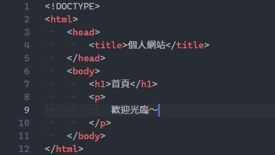

Visual Studio Code 設定集
雖然我寫 HTML 和 Python 都是用 RJ TextEd，但做為手敲程式碼的人，總喜歡把玩各家文字編輯器。從早期的 ConTEXT、RJ TextEd、PSPad，然後 jEdit、MadEdit、Notepad++、Geany，到新進的 Sublime Text、Atom、以及集各家之長的 Visual Studio Code！啟動速度、內建功能、擴充套件、配色主題、客製能力，每樣都讓人滿意。
雖然跟速度更快、檔案更小、操作更順、整合更巧的 Sublime Text 比的話，Visual Studio Code 還是輸一大截：「畢竟這是廿一世紀最強文字編輯器，不管誰跟它比都輸一大截。」但輸入中文時，選字欄固定在螢幕最左上角，且無註冊會跳訊息視窗提醒付費，而且不是免費使用，只是免費試用[1]，所以我寧可用開源、免費的 Visual Studio Code 就好。
擴充功能
Atom One Dark Theme (Mahmoud Ali)
我最喜歡的配色。之前用 One Dark Pro，但做得不完美。
不過我喜歡亮一點的註解顏色，因此編輯：
[USER]\.vscode\extensions\akamud.vscode-theme-onedark-2.1.0\themes\OneDark.json
將 5C6370 改為 EEDC82，且隨後 fontStyle 的 italic 改為 normal 或乾脆刪除：
{
"name":"Comment",
"scope":["comment"],
"settings":{
"foreground":"#EEDC82",
"fontStyle":"normal"
}
},
{
"name":"Comment Markup Link",
"scope":["comment markup.link"],
"settings":{"foreground":"#EEDC82"}
},
{
"name":"Punctuation Definition Comment",
"scope":["punctuation.definition.comment"],
"settings":{"foreground":"#EEDC82"}
},
{
"name":"[VSCODE-CUSTOM] Markdown Quote",
"scope":"markup.quote.markdown",
"settings":{
"foreground":"#EEDC82",
"fontStyle":"normal"
}
},
我的使用者設定
編輯 [USER]\AppData\Roaming\Code\User\settings.json，內容為：
{
//視窗樣式
"window.titleBarStyle": "custom",
"window.title": "${dirty}${activeEditorLong}",
"editor.minimap.enabled": false,
"workbench.statusBar.feedback.visible": false,
"workbench.activityBar.visible": false,
//編輯器樣式
"workbench.colorTheme": "Atom One Dark",
"editor.fontFamily": "DejaVu Sans Mono, 思源黑體 HW",
"editor.fontSize": 15,
"editor.links": false,
"editor.renderIndentGuides": false,
//編輯器行為
"editor.autoClosingBrackets": "never",
"html.autoClosingTags": false,
"editor.matchBrackets": false,
"editor.autoIndent": false,
"editor.detectIndentation": false,
"editor.insertSpaces": false,
"editor.renderWhitespace": "all",
"editor.trimAutoWhitespace": false,
"files.eol": "\n",
"editor.scrollBeyondLastLine": false,
"editor.largeFileOptimizations": false,
"terminal.integrated.shell.windows": "C:\\WINDOWS\\System32\\cmd.exe",
//自動提示、建議、通知
"editor.quickSuggestions": {
"other": false,
"comments": false,
"strings": false
},
"editor.tabCompletion": true,
"extensions.ignoreRecommendations": true,
"workbench.tips.enabled": false,
//檔案
"files.hotExit": "off",
"window.restoreWindows": "all",
"files.trimTrailingWhitespace": true,
"workbench.quickOpen.closeOnFocusLost": false,
"files.associations": {"*.es": "javascript"},
//雜項
"workbench.startupEditor": "newUntitledFile",
"git.enabled": false,
"telemetry.enableCrashReporter": false,
"telemetry.enableTelemetry": false,
//關閉更新
"update.channel": "none",
"update.enableWindowsBackgroundUpdates": false,
"update.showReleaseNotes": false
}
我的 HTML 使用者程式碼片段
新增 [USER]\AppData\Roaming\Code\User\snippets\html.json，複製貼上如下內容：
{
"chapter": {
"prefix": "chapter",
"body": [
"<!DOCTYPE html>",
"",
"<html lang='zh-TW'>",
"",
" <head>",
" <meta charset='UTF-8'>",
" <title>TWIDEEM CIVS</title>",
" <link href='../../favicon.png' rel='icon'>",
" <link href='../../styles/layout.css' rel='stylesheet'>",
" <script src='../../scripts/template.js'></script>",
" </head>",
"",
" <body>",
"",
" <article>",
"",
" <header>",
" <h1>$1</h1>",
" </header>",
"",
" </article>",
"",
" </body>",
"",
"</html>"
],
"description": "chapter"
},
"abstract": {
"prefix": "abstract",
"body": [
"<p>$1</p>"
],
"description": "abstract"
},
"section": {
"prefix": "section",
"body": [
"<hr>",
"",
"<section>",
" <h2>$1</h2>",
" <p>",
" <br>",
" </p>",
"</section>"
],
"description": "section"
},
"sub": {
"prefix": "sub",
"body": [
"<hr>",
"<section>",
" <h3>$1</h3>",
" <p>",
" <br>",
" </p>",
"</section>"
],
"description": "subsection"
},
"field": {
"prefix": "field",
"body": [
"<section>",
" <h4>$1</h4>",
" <p>",
" <br>",
" </p>",
"</section>"
],
"description": "field"
},
"item": {
"prefix": "item",
"body": [
"<section>",
" <h5>$1</h5>",
" <p>",
" <br>",
" </p>",
"</section>"
],
"description": "item"
},
"paragraph": {
"prefix": "paragraph",
"body": [
"<p>",
" $1<br>",
"</p>"
],
"description": "paragraph"
},
"figure": {
"prefix": "figure",
"body": [
"<figure>",
" <img src='../../figures/$1' alt='插圖'>",
" <figcaption></figcaption>",
"</figure>"
],
"description": "figure"
},
"table": {
"prefix": "table",
"body": [
"<table>",
" <tr><td>$1</td><td></td></tr>",
" <tr><td></td><td></td></tr>",
" <tr><td></td><td></td></tr>",
"</table>"
],
"description": "table"
},
"rule": {
"prefix": "rule",
"body": [
"<hr>$1"
],
"description": "horizontal rule"
},
"break": {
"prefix": "break",
"body": [
"<br>$1"
],
"description": "break"
},
"index": {
"prefix": "index",
"body": [
"．<a href='$1.html'></a><br>"
],
"description": "index"
},
"note": {
"prefix": "note",
"body": [
"．<span title='$1'></span><br>"
],
"description": "note"
},
"label": {
"prefix": "label",
"body": [
"．$1<br>"
],
"description": "label"
},
"reference": {
"prefix": "reference",
"body": [
"<a href='$1' target='_blank'></a>"
],
"description": "reference"
},
"textarea": {
"prefix": "textarea",
"body": [
"<textarea class='brush:'>$1",
"</textarea>"
],
"description": "textarea"
},
"output": {
"prefix": "output",
"body": [
"<br>",
"<output>",
" $1<br>",
"</output>"
],
"description": "output"
},
"citation": {
"prefix": "citation",
"body": [
"<q>",
" $1<br>",
"</q>"
],
"description": "citation"
},
"annotation": {
"prefix": "annotation",
"body": [
"<ins>[$1]</ins>"
],
"description": "annotation"
},
"footnote": {
"prefix": "footnote",
"body": [
"<hr>",
"",
"<footer>",
" <p>",
" [$1]<br>",
" </p>",
"</footer>"
],
"description": "footnote"
},
"tabular": {
"prefix": "tabular",
"body": [
"<style>table td:nth-child(1){width:20%}</style>"
],
"description": "tabular"
},
"plugin": {
"prefix": "plugin",
"body": [
"<script src='../../objects/plugins/$1.js'></script>"
],
"description": "plugin"
},
"script": {
"prefix": "script",
"body": [
"<script>",
" $1",
"</script>"
],
"description": "script"
},
"php": {
"prefix": "php",
"body": [
"<?php",
" $1",
"?>"
],
"description": "php"
},
"diary": {
"prefix": "diary",
"body": [
"<hr id='$1'>",
"",
"<section>",
" <h2></h2>",
" <p>",
" <br>",
" </p>",
"</section>"
],
"description": "section"
},
"versus":{
"prefix": "versus",
"body": [
"$1 <i>v.</i>"
],
"description": "versus"
}
}
複製一份 html.json 為 plaintext.json 的話，新增檔案也能使用。或者 1.20 版的話，副檔名改為 html.code-snippets，以 Global snippets 的方式共享。
其他修改
切換英文介面
Visual Studio Code 在早期版本會自動根據作業系統的語系切換語言介面，看不慣中文想切換英文的人，必須自己寫設定檔。
新增 [USER]\AppData\Roaming\Code\User\locale.json 檔案，在裡面寫上 {"locale":"en"}，然後重新啟動軟體。
修正預設主題
使用 Visual Studio Code 預設色彩佈景主題的話，實體字元顏色與標籤顏色一樣，顯得不突出，所以到：
C:\Program Files\Microsoft VS Code\resources\app\extensions\html\syntaxes\html.tmLanguage.json
將 constant.character.entity.html 改為 constant.character.escape.entity.html。
id 屬性會是藍色，所以把 entity.other.attribute-name.id.html 改為 entity.other.attribute-name.html。
美化中英文字
設定編輯器的字型時，可以用逗號隔開英文字型和中文字型：
"editor.fontFamily": "Cascadia Code, 思源黑體 HW"
這樣就能以指定的英文字型顯示英文字母，中文字的部分再以隨後指定的中文字型來處理，就不會看到與英文字體格格不入的細明體了：

以瀏覽器開啟所編輯網頁
由於網頁有設定預設瀏覽器的話，點兩下網頁就會自動以瀏覽器開啟，所以這功能不用下載擴充功能，只要點擊 File → Preferences → Keyboard Shortcuts，搜尋 Run Active File In Active Terminal，將 Keybinding 設為 Ctrl + L，往後就能按此組合鍵開啟網頁或執行程式。
操作技巧
Ctrl + Alt + 滑鼠左鍵 = 多行編輯
Shift + Alt + 滑鼠左鍵 = 多行選取
版本選擇
我只想要一個既靈巧又實用的文字編輯器，而不是既方便又強大的整合開發環境，因此 Visual Studio Code 主打的一些智慧功能都不在我考量範圍，所以我用的版本停留在 1.27.2，但 html.tmLanguage.json 是用 1.25.1 版。
其實我原本是用 1.25.1，但使用者介面有 BUG，在 "window.titleBarStyle": "custom" 下經常無法正常點擊標題列和分頁。1.26.1 同樣也有這問題，到了 1.27 才解決。
1.17.2
支援 Python 的 F String 語法。
咖啡色 ICON 的最後一版。
1.19.3
提升啟動速度與程式執行效率。
1.20.1
支援 Global snippets。
1.22.2
加快大檔案的著色速度。
1.25.1
可設定 window.titleBarStyle": "custom" 讓視窗標題列跟著 Dark themes 變暗。（到 1.28.2 變預設）
目前跑最快的版本。
1.26.1
新增 Breadcrumbs 功能介面。
HTML 的 ID 屬性不再顯示藍色。但這版開始，HTML 著色速度變慢，應該跟 html.tmLanguage.json 從 15.7KB 暴肥到 83KB 有關，因為我調換後就變快了～
1.27.2
重新設計 Settings 操作介面。
往後版本的使用者介面都跟這版大同小異，沒什麼變化。
1.31.1
先從看到的範圍為文字標色，再慢慢從頭開始標色，這樣的上色情況較理想。
但也不是沒有缺點，過去會等幾秒，看上色完畢就表示功能就緒，可以開始動手敲程式碼！現在看上去準備好了，其實很多功能還沒就緒，結果打了一堆看起來很虛的東西出來～
1.35.1
新的 ICON。
這版開始，速度變慢很多，尤其 Snipptes，打太快不會轉為語法結構，要等框跳出才能按 Tab。這點在 1.36.1 有改善一些，但必須等 Visual Studio Code 完全載入完畢才可以快敲 Snipptes，剛進程式時問題依然存在。到 1.37.1 才真正解決問題。